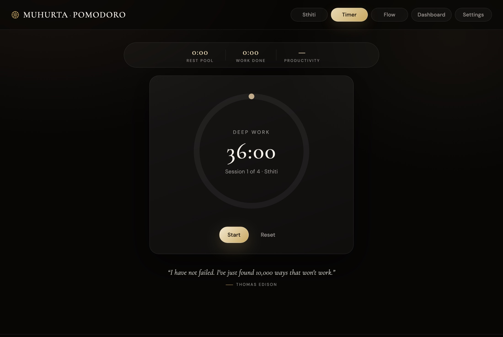
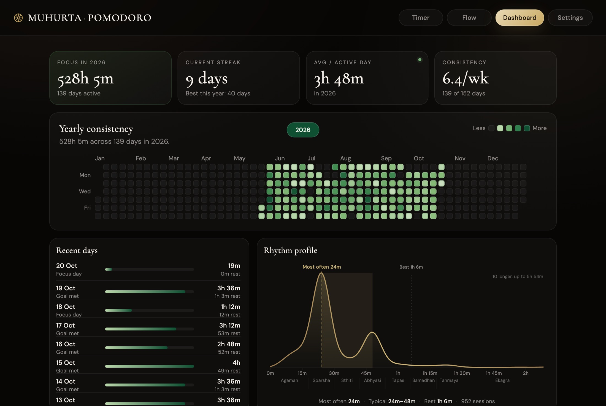

Free · for Mac
A calm Pomodoro timer built on the old Indian way of keeping time. Work in 24-minute Ghadis and 48-minute Muhurtas, rest when it is earned, and watch your focus grow, day after day.

The idea
In the old Indian reckoning, a day and night is thirty Muhurtas, and each Muhurta is two Ghadis. Long before anyone named the Pomodoro, these were the natural units of a working mind. This timer counts your focus in them.
A full stretch of deep work. Long enough to get somewhere, short enough to stay sharp.
Half a Muhurta. The classic focus block, and the easiest place to begin.
Eight levels
Begin with twelve minutes of Agaman, "arriving". As focus becomes a habit, move up a level, all the way to Ekagra: ninety-six minutes, one-pointed. Every level keeps the same balance of work and rest.
Inside the app
Focus, a short rest, focus again, then a longer rest. Bells mark each change, softly.
No countdown at all. Start, keep going until the work is done, and it keeps the time for you.
Skip a break when you are deep in it. The minutes go into your pool, ready when you need them.
Streaks, a consistency calendar, and a rhythm profile that shows how long you really focus.
Free, with no ads and no tracking. A free account (just your email) keeps your history safe, and the timer keeps working with no internet.
Make a free account with your email and a password. Your history, combinations and settings appear on every computer you use. Updates install with one click.
The dashboard

Install
Click Download for Mac. You get one file, about 20 MB.
Open the file and drag Muhurta Pomodoro onto the Applications folder beside it.
Your Mac asks once about apps from outside the App Store. Click Done, then System Settings → Privacy & Security → Open Anyway.
Why the warning? Apple charges developers $99 a year to register an app. Muhurta Pomodoro is a free project and is not registered, so macOS asks you to confirm it the first time. After that it opens like any other app, and it keeps itself up to date.
Questions
Yes. No trial, no subscription, no ads. It was made for friends and is shared as it is.
Only to sign in the first time. After that the timer, your history and the dashboard all work offline; changes sync to your account when you're back online.
In your account, and in a copy on each computer you're signed in on, so it works offline. Signing out saves everything to your account and removes it from that computer; sign in again to get it back.
Macs with Apple Silicon: any Mac from late 2020 onwards (M1 and newer). Older Intel Macs are not supported yet.
When a new version is out, a notice appears in the app. Click Update now; a few seconds later it reopens on the new version and shows you what changed.
A Windows version is available too. An Android app is planned.